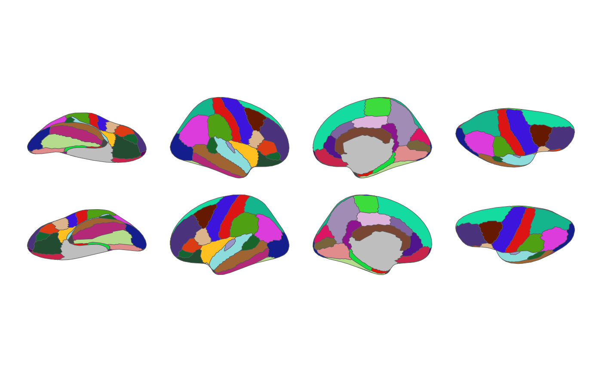

Builds a minimal, deterministic plot of a ggseg_atlas: every region filled
by its label, no legend, and ggplot2::theme_void(). This is the canonical
construction used across the ggsegverse for visual-regression (vdiffr)
snapshots, so that every atlas is rendered the same way and a stray legend,
axis, or title cannot creep into a snapshot. It doubles as a quick way to
preview an atlas.
Arguments
- atlas
- position
A
ggplot2position adjustment arranging the brain views. Defaults toposition_brain(hemi ~ view)for cortical atlases andposition_brain(. ~ view)for slice-based atlases (subcortical, cerebellar, tract), whose views already contain both hemispheres.- na.value
Fill colour for regions with no palette entry. Defaults to
"grey".
Value
A ggplot2::ggplot() object.
Details
The atlas palette is applied with ggplot2::scale_fill_manual() when it is
present; atlases without a palette fall back to the default ggplot2 fill
scale.
Examples
brain_test_plot(dk())
